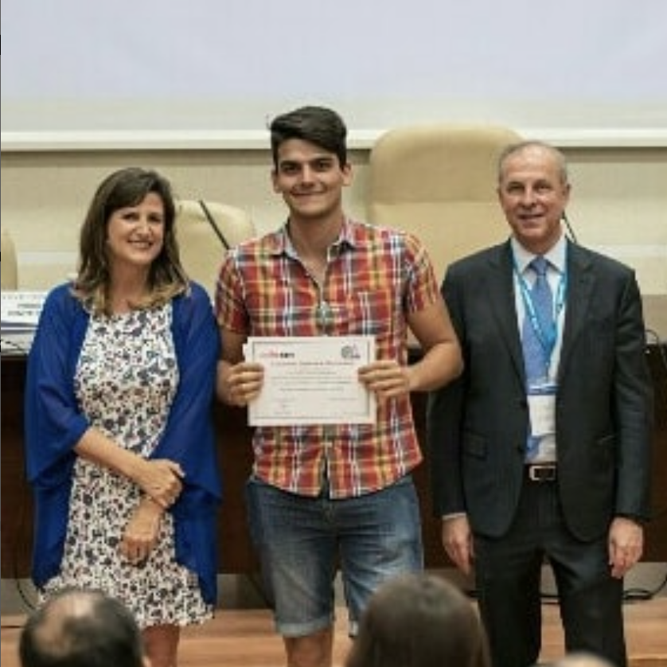
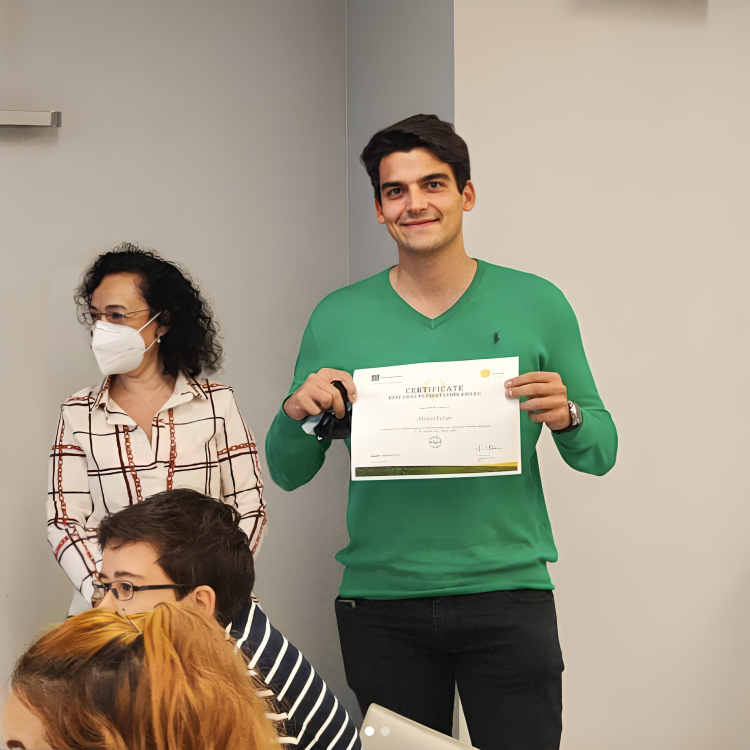
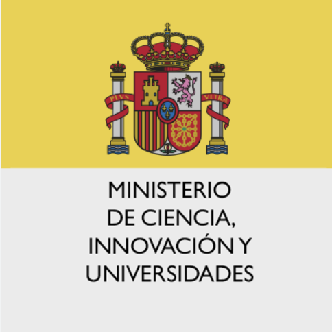
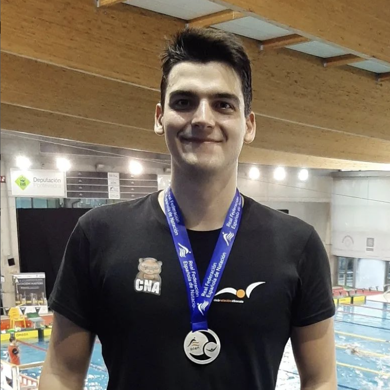
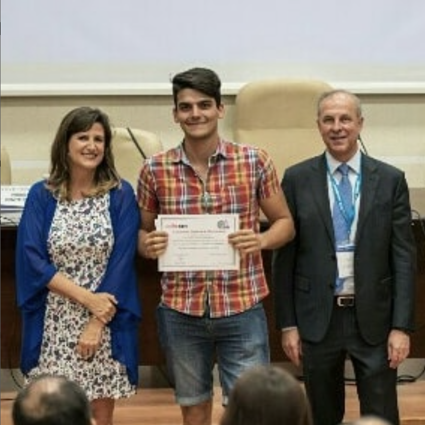
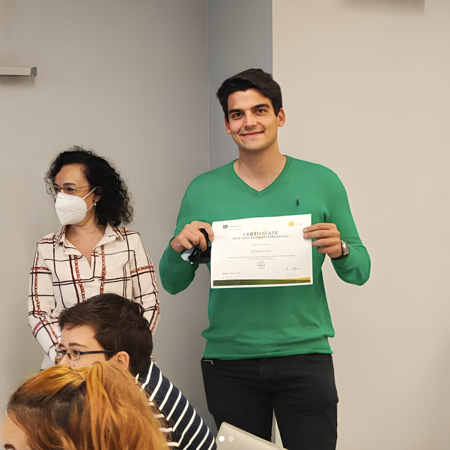
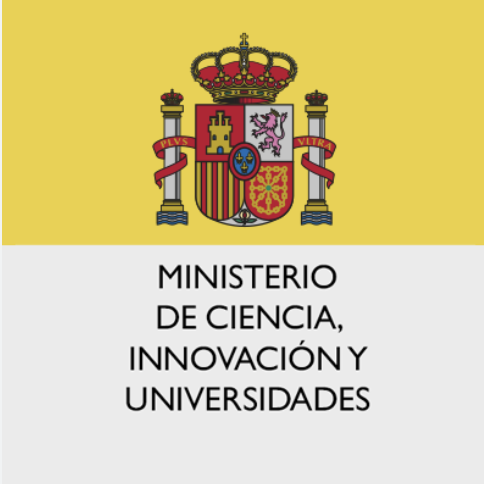
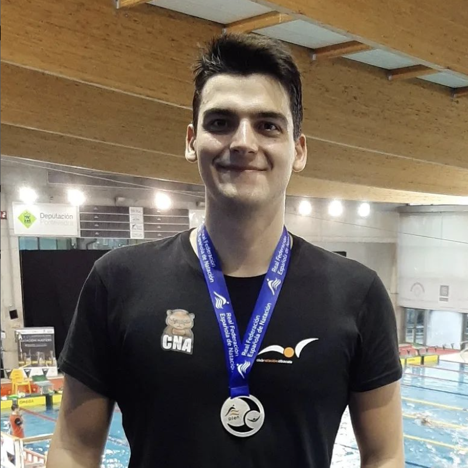

Laboral Experience
Education
University of Valencia
University of Valencia
UCLM
University of Valencia
Skills
Python
Tensorflow
Pandas
Scikit-Learn
Bash
R
Genome Assembly
Annotation
Comparative Genomics
NGS
Structure Prediction
Structure Resolution & Rephinement
Structural Biology
Virology
Microbiology
Proteomics
Interactomics
Biophysics
Publications
Structural and Genomic Evolution of RRNPPA Systems and Their Pheromone Signaling
mBio
Molecular Basis of Lysis-Lysogeny Decisions in Gram-Positive Phages
Annual Review of Microbiology
Revisiting the pH-gated conformational switch on the activities of HisKA-family histidine kinases
Nature Communications
The arbitrium system controls prophage induction
Current Biology
Antagonistic interactions between phage and host factors control arbitrium lysis–lysogeny decision
Nature Microbiology
Microbiome Preterm Birth DREAM Challenge: Crowdsourcing Machine Learning Approaches to Advance Preterm Birth Research
Cell Reports Medicine
Structural and Genomic Evolution of RRNPPA Systems and Their Pheromone Signaling
mBio
Molecular Basis of Lysis-Lysogeny Decisions in Gram-Positive Phages
Annual Review of Microbiology
Revisiting the pH-gated conformational switch on the activities of HisKA-family histidine kinases
Nature Communications
The arbitrium system controls prophage induction
Current Biology
Antagonistic interactions between phage and host factors control arbitrium lysis–lysogeny decision
Nature Microbiology
Microbiome Preterm Birth DREAM Challenge: Crowdsourcing Machine Learning Approaches to Advance Preterm Birth Research
Cell Reports Medicine
Awards and Prizes




Voluntering
Sea Turtle Conservancy (2022-present)
- Contributed to the conservation efforts of Green turtles in Costa Rica.
- Proud adoptive father of Pistachio a Costa Rica Green Turtle.
Climathon Valencia (2022)
- Supported initiatives focused on utilizing data-driven approaches to address environmental challenges.
Bylinedu (2023)
- Assisted in promoting technological vocation to children through inclusive technology programs.
Contact
alonso@evolvingtherapeutics.es
Phone: +34 660 035 315






Voluntering
- Contributed to the conservation efforts of Green turtles in Costa Rica.
- Proud adoptive father of Pistachio a Costa Rica Green Turtle.
- Supported initiatives focused on utilizing data-driven approaches to address environmental challenges.
- Assisted in promoting technological vocation to children through inclusive technology programs.